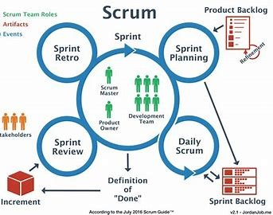
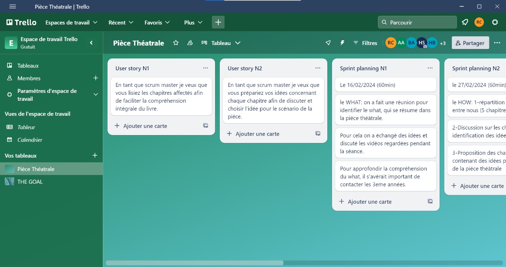

Méthodologie
Agile
L'approche agile se caractérise par une gestion de projet itérative et incrémentale, mettant l'accent sur la flexibilité, la collaboration avec le client, et la livraison rapide de produits fonctionnels. Elle s'appuie sur des cycles de développement courts et des feedbacks continus pour améliorer constamment le produit.

Scrum
Scrum est un cadre agile que nous avons appliqué pour structurer notre travail en équipes.

Trello
Pour organiser et suivre notre travail, nous avons utilisé Trello, un outil de gestion de projet visuel. Nous avons créé un tableau pour chaque sprint, facilitant ainsi la visualisation et la gestion des tâches.
